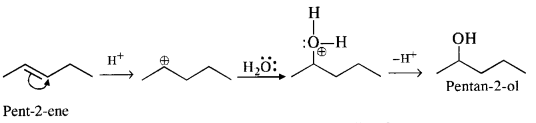
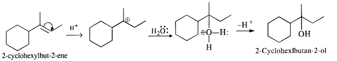

NCERT Solutions For Class 12 Chemistry Chapter 11 Alcohols Phenols and Ether
Topics and Subtopics in NCERT Solutions for Class 12 Chemistry Chapter 11 Alcohols Phenols and Ether:
| Section Name | Topic Name |
| 11 | Alcohols, Phenols and Ethers |
| 11.1 | Classification |
| 11.2 | Nomenclature |
| 11.3 | Structures of Functional Groups |
| 11.4 | Alcohols and Phenols |
| 11.5 | Some Commercially Important Alcohols |
| 11.6 | Ethers |
NCERT Solutions CBSE Sample Papers ChemistryClass 12 Chemistry
NCERT TEXTBOOK QUESTIONS SOLVED
11.1. Classify the following as primary, secondary and tertiary alcohols.
Ans: Primary alcohols: (i), (ii), (iii)
Secondary alcohols: (iv), (v)
Tertiary alcohols: (vi)
11.2. Identify aliylic alcohols in the above examples.
Ans: (ii) and (iv) i.e. H2C=CH – CH2OH and
11.3. Name the following compounds according to IUPAC system.
Ans:
11.4. Show how are the following alcohols prepared by the reaction of a suitable Grignard reagent on methanal ?
Ans:
11.5. Write structures of the products of the following reactions:
Ans:
11.6. Give structures of the products you would expect when each of the following alcohol reacts with (a)HCl-ZnCl2 (b)HBrand (c) SOCl2
(i)Butan-1-ol
(ii)2-Methylbutan-2-ol
Ans:
11.7. Predict the major product of acid catalysed dehydration of
(i) 1-nicthylcyclohcxanoland
(ii) butan-1-ol
Ans:
11.8. Ortho and para nitrophenols are more acidic than phenol. Draw the resonance structures of the corresponding phenoxide ions.
Ans:
The resonance structures of o-and p- nitrophenoxide ions and phenoxide ion are given below:
11.9; Write the equations involved in the following reactions:
(i) Reimer-Tiemann reaction
(ii) Kolbe’s reaction
Ans: (i) Reimer-Tiemann reaction
11.10. Write the reactions of Williamson synthesis of 2-ethoxy-3-methylpentane starting from ethanol and 3-methylpentan-2-ol.
Ans: In Williamsons’s synthesis, the alkyl halide should be primary. Thus, the alkyl halide should be derived from ethanol and the alkoxide ion from 3-methylpentan-2-ol. The synthesis is as follows
11.11. Which of the following is an appropriate set of reactants for the preparation of l-methoxy-4- nitrobenzene and why?
Ans:
11.12. Predict the products of the following reactions:
Ans:

NCERT EXERCISES
11.1. Write IUPAC names of the following compounds:
Ans: (i) 2,2,4-Trimethylpentan-3-ol
(ii) 5-Ethylheptane-2,4-dioI
(iii) Butane-2,3-diol
(iv) Propane-1,2,3-triol
(v) 2-Methylphenol
(vi) 4-Methylphenol
(vii) 2,5-DimethylphenoI
(viii) 2,6-Dimethylphenol
(ix) 1-Methoxy-2-methylpropane
(x) Ethoxybenzene
(xi) 1-Phenoxyheptane
(xii) 2-Ethoxybutane
11.2. Write structures of the compounds whose IUPAC names are as follows:
(i)2-Methylbutan-2-ol
(ii)l-Phcnylpropan-2-ol
(iii)3,5-DimethyIhexane-l,3,5-triol
(iv)2,3-Dicthylphenol
(v)1-Ethoxypropane
(vi)2-Ethoxy-3-methylpentane
(vii) Cyclohexylmethanol
(viii) 3-Cyclohexylpcntan-3-ol
(ix)Cyclopcnt-3-en-l-ol
(x)4-ChIoro-3-ethylbutan-l-ol
Ans:
11. 3. (a) Draw the structural formulas and write IUPAC names of all the isomeric alkanols with the molecular formula CsH12O
(b) Classify the isomers of alcohols given in part (a) as primary, secondary and tertiary alcohols.
Ans:
(a) The molecular formula C5H120 represents eight isomeric alkanols. These are :
(b) Praimary: (i), (ii), (iii), (iv) ; Secondary :(v), (vi), (viii) ; Tertiary : (vii)
11.4. Explain why propanol has higher boiling point than that of the hydrocarbon, butane?
Ans: The molecules of butane are held together by weak van der Waal’s forces of attraction while those of propanol are held together by stronger intermolecular hydrogen bonding.
11.5. Alcohols are comparatively more soluble in water than hydrocarbons of comparable molecular masses. Explain this fact.
Ans: Alcohols can form hydrogen bonds with water and by breaking the hydrogen bonds already existing between water molecules. Therefore, they are soluble in water.
On die other hand, hydrocarbons cannot from hydrogen bonds with water and hence are insoluble in water.
11.6. What is meant by hydroboration-oxidation reaction? Illustrate it with an example.
Ans: The addition of diborane to alkenes to form trialkyl boranes followed by their oxidation with alkaline hydrogen peroxide to form alcohols is called hydroboration-oxidation. For example,
11.7. Give the structures and IUPAC names of monohydric phenols of molecular formula, C7H8O.
Ans: The three isomers are:
11.8. While separating a mixture of ortho and para nitrophenols by steam distillation, name the isomer which will be steam volatile. Give reason.
Ans: 0-N itrophenol is steam volatile due to chelation (intramolecular H – bonding) and hence can be separated by steam distillation from/Miitrophenol which is hot steam volatile because of intermolecular H-bonding.
11.9. Give the equations of the reaction for the preparation of phenol from cumene.
Ans: This process has a great industrial importance because it gives the preparation of two very useful compounds i.e. phenol and acetone. The raw materials are benzene and propene and it initially proceeds by Friedel Crafts alkylation of benzene.
Oxygen is bubbled through the above solution to form cumene hydroperoxide which is decomposed with aqueous acid
solution to form phenol and acetone as follows:
11.10. Write chemical reaction for the preparation of phenol from chlorobenzene.
Ans:
11.11. Write the mechanism of hydration of ethene to yield ethanol.
Ans: Direct addition of H20 to ethene in presence of an acid does not occur. Indirectly, ethene is first passed through concentrated H2S04, when ethyl hydrogen sulphate is formed.
11.12. You are given benzene, cone. H2S04and NaOH. Write the equations for the preparation of phenol using these reagents.
Ans:
11.13. Show how will you synthesise
(i) 1 -phenylethanol from a suitable alkene.
(ii) cyclohexylmethanol using an alkyl halide by an SN2 reaction.
(iii) Pentan-l-ol using a suitable alkyl halide?
Ans:
11.14. Give two reactions that show the acidic nature of phenol. Compare its acidity with that of ethanol.
Ans: The reactions showing acidic nature of phenol are:
(a) Reaction with sodium: Phenol reacts with active metals like sodium to liberate H, gas.
(b) Reaction with NaOH: Phenol dissolves in NaOH to form sodium phenoxide and water.
Phenol is more acidic than ethanol. This is due to the reason that phenoxide ion left after the loss of a proton from phenol is stabilized by resonance, while ethoxide ion left after less of a proton from ethanol, is not.
11.15. Explain why is orthonitrophenol more acidic than orthomethoxyphenol?
Ans: Nitro (NO2) group is an electron withdrawing group while methoxy (OCH3) group is electron releasing in nature. The release of H+ ion is therefore, easier from o-nitrophenol while it is quite difficult from o-methoxyphenol. Apart form that, o-nitrophenoxide ion is stabilised due to resonance o-nitrophenol is steam volatile while p-nitrophenol is not. This is on account of intramolecular hydrogen bonding in the molecules of o-nitrophenol. As a result, its boiling point is less than that of p-nitrophenol in which the molecules are linked by intermolecular hydrogen bonding.
It is interesting to note that in the substituted phenols, the nature and position of the substituent influences the boiling point of phenol.
For example: .o-nitrophenol is steam volatile while p-nitrophenol is not. This is supported by the fact that the boiling point temperature of o-nitrophenol (100°C) is less than that of p-nitrophenol, (279°C). In o-nitrophenol, there is intramolecular hydrogen bonding in OH and NO2 groups placed in a adjacent positions. However, these are linked by intermolecular hydrogen bonding in the p-isomers. It is quite obvious that extra energy is needed to the cleave the hydrogen bonds in the p-isomer. Consequently, its boiling point is more.
o-nnrophenol with lower boiling point is steam volatile while p-nitrophenol is not. This helps in the separation of the two isomers present in the liquid mixture. On passing steam, o-nitropbenol volatilises and its vapours rise alongwith steam and after condensation, collect in the receiver p-nitrophenol is left behind in the distillation flask. e-nkrophenol p-nnrophenol.
On the contrary, o-methoxyphenoxide is destabilised since the electron density on the negatively charged oxygen tends to increase due to the electron releasing tendency of the methoxy(OCH3) group.

In the light of the above discussion, we may conclude that o-nitrophenol is a stronger acid (pKa = 7-23) than o-methoxyphenl (pKa = 9.98)
11.16. Explain how does the – OH group attached to a carbon of benzene ring activate it towards electrophilic substitution?
Ans: Phenol may be regarded as a resonance hybrid of structures I-V, shown below.
As a result of +R effect of the -OH group, the electron density in the benzene ring increases thereby facilitating the attack of an electrophile. In other words, presence of -OH group, activates the benzene ring towards electrophilic substitution reactions. Further, since the electron density is relatively higher at the two o-and one p-position, therefore electrophilic substitution occurs mainly at o-and p-positions.
11.17. Give equations of the following reactions:
(i) Oxidation of propan-l-ol with alkaline KMnO4 solution.
(ii) Bromine in CS2 with phenol.
(iii) Dilute HNO3 acid with phenol
(iv) Treating phenol with chloroform in presence of aqueous NaOH.
Ans:
11.18. Explain the following with an example
(i) Kolbe’s reaction
(ii) Reimer – Tiemann reaction –
(iii) Williamson ether synthesis
(iv) Unsymmetrical ether
Ans: (i) Kolbe’s reaction: Sodium phenoxide when heated with C02 at 400K under a pressure of 4-7 atmospheres followed by acidification gives 2-hydroxybenzoic acid (salicylic acid) as the major product along with a small amount of 4-hydroxybenzoic acid.This reaction is called Kolbe’s reaction.
(ii) Reimer-Tiemann reaction: Treatment of phenol with CHC13 in presence of aqueous sodium or potassium hydroxide at 340 K followed by hydrolysis of the resulting product gives 2-hydroxybenzaldehyde (salicyialdehyde) as the major product. This reaction is called Reimer-Tiemann reaction.
(iii) Williamson’s ether synthesis: It involves the treatment of an alkyl halide with a suitable sodium alkoxide to obtain ethers. The sodium alkoxide needed for the purpose is prepared by the action of sodium on a suitable alcohol. In this reaction alkyl halide should primary. Secondary and tertiary halides will predominantly give an alkene.
(iv) Unsymmetrical ether: If the alkyl or aryl groups attached to the oxygen atom are different, ethers are called unsymmetrical ethers. For example, ethyl methyl ether, methyl phenyl ether, 4-chlorophenyl- 4-nitrophenyl ether, etc.
11.19. Write the mechanism of acid dehydration of ethanol to yield ethene.
Ans: The mechanism of dehydration of alcohols to form alkenes occur by the following three steps:
11.20. How are the following conversions carried out?
(i) Propane → Propan-2-ol
(ii) Benzyl chloride → Benzyl alcohol
(iii) Ethyl mag. chloride → Propan-1-ol
(iv) Methyl mag. bromide → 2-Methylpropan-2-ol.
Ans:
11.21. Name the reagents used in the following reactions:
(i) Oxidation of a primary alcohol to carboxylic acid.
(ii) Oxidation of a primary alcohol to aldehyde.
(iii) Brominationofphenolto2,4,6-tribromophenol
(iv) Benzyl alcohol to benzoic acid.
(v) Dehydration of propan-2-oI to propene.
(vi) Butan-2-one to butan-2-oL .
Ans: (i) Acidified potassium dichromate or neutral/ acidic/ alkaline potassium permanganate.
(ii) Pyridinium chlorochromate (PCC), (C5H5NH)+ ClCrO3– in CH2Cl2
or Pyridinium dichromate (PDC),[(C5H5NH)2]2+Cr2O72-in CH2Cl2
(iii) Aqueous bromine, i.e., Br2/H2O.
(iv) Acidified or alkaline potassium permanganate.
(v) 85% H2S04 at 440 K.
(vi) Ni/H2 or NaBH4 or LiAlH4.
11.22. Give reason for the higher boiling point of ethanol in comparison to methoxymethane.
Ans: Ethanol undergoes intermolecular H-bonding due to the presence of a hydrogen atom attached to the electronegative oxygen atom. As a result, ethanol exists as associated molecules.
Consequently, a large amount of energy is required to break these hydrogen bonds. Therefore, the boiling point of ethanol is higher than that of methoxymethane which does not form H-bonds.
11.23. Give IUPAC names of the following ethers.
Ans: (i)1-Ethoxy-2-methylpropane
(ii) 2-Chlorlo-l-methoxy ethane
(iii) 4-Nitroanisole
(iv) 1-Methoxypropane
(v) 1 -Ethoxy-4 -4 – dimethyl cyclohexane
(vi)Ethoxybenzene
11,24. Write the names of the reagents and equations for the preparation of the following ethers by Williamson’s synthesis :
(i) 1-Propoxypropane
(ii) 2-Methoxy-2-methylpropane
(iii) Ethoxybenzene
(iv) Methoxyethane.
Ans:
11.25. Illustrate with examples the limitations of Willamson synthesis for the preparation of certain types of ethers.
Ans: Williamson’s synthesis is a versatile method for the synthesis of both symmetrical and unsymmetrical ethers. However, for the synthesis of unsymmetrical ethers, a proper choice of reactants is necessary. Since Williamson’s synthesis occurs by SN2 mechanism and primary alkyl halides are most reactive in Sn2 reaction, therefore, best yields of unsymmetrical ethers are obtained when the alkyl halides are primary and the alkoxide may be primary, secondary or tertiary. For example, tert-butylethyl ether is prepared by treating ethyl bromide with sodium tert-butoxide.
11.26. How is 1-propoxypropane synthesised from propane-1-ol? Write mechanism of the reaction. (C.B.S.E. Sarnie Paper 2015)
Ans: Two methods can be used for the synthesis of 1-propoxypropane from propan-1-ol
By Williamson’s synthesis
The halogen derivative such as bromoderivative and sodium salt of the alcohol take part in the Williamson’s synthesis
11.27. Preparation of ethers by acid dehydration of secondary or tertiary alcohols is not a suitable method. Give reason.
Ans: Acid catalysed dehydration of primary alcohols to ethers occurs by SN2 reaction involving nucleophilic attack by the alcohol molecule on the protonated alcohol molecule.
Under these conditions, 2° and 3° alcohols, however, give alkenes rather than ethers. The reason being that due to steric hindrance, nucleophilic attack by the alcohol molecule on the protonated alcohol molecule does not occur. Instead protonated 2° and 3° alcohols lose a molecule of water to form stable 2° and 3° carbocation. These carbocations prefer to lose a proton to form alkenes rather than undergoing nucleophilic attack by alcohol molecules to form ethers.
11.28. Write the equation of the reaction of hydrogen iodide with (i)1-propoxypropane (ii)methoxybenzene, and (iii)benzyl ethyl ether
Ans:
11.29. Explain the fact that in alkyl aryl ethers, alkoxy group :
(i) activates the benzene ring towards electrophilic substitution.
(ii) directs the incoming substituents towards ortho and para positions in the ring.
Ans:
(i) The alkoxy group (RO -) with lone electron pairs on the oxygen atom activates the ortho and para positions in the ring by + M (or + R) effect as shown below :
As the ortho and para positions in the ring become points of high electron density, the electrophiles prefer to attack these positions.
(ii) The alkoxy group directs the incoming group which is an electrophile towards the ortho and para positions in the ring. As a result, a mixture of isomeric products is formed.
11.30. Write the mechanism of the reaction of HI with methoxymethane.
Ans: When equimolar amounts of HI and methoxy methane are reacted, a mixture of methyl alcohol and methyl iodide is formed by the following mechanism:
11.31. Write equations of the following reactions:
(i) Friedel-Crafts reaction -alkylation of anisole
(ii) Nitration of anisole.
(iii) Bromination of anisole in ethanoic acid medium
(iv) Friedel-Craft’s acetylation of anisole.
Ans:

11.32. Show how will you synthesise the following from appropriate alkenes.
Ans: All the alcohols are formed by the hydration of alkenes in the acidic medium. The addition follows Markownikov’s rule. 1-Methylcyclohexene can be used in the reaction.
(ii) 4-Methylpent-3-ene upon hydration in the acidic medium will give the desired alcohol.
(iii) Pent-2-ene gives the desired alcohol upon hydration in the presence of acid.

(iv) The cyclic alkene used in this reaction is 2-cyclohexylbut-2-ene.

11.33. When 3-methylbutant 2-ol is treated with HBr, the following reaction takes place:
Give a mechanism for this reaction.
(Hint: The secondary carbocation formed in step II rearranges to a more stable tertiary carbocation by a hydride ion shift from 3rd carbon atom.)
Ans:
Protonation of the given alcohol followed by loss of water gives a 2° carbocation(I), which being unstable rearranges by 1,2-hydride shift to form the more stable 3° carbocation (II). Nucleophilic attack by Br ion on this carbocation (II) gives the final product.
More Resources for CBSE Class 12: